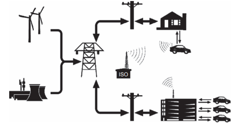

Vecicle to Grid (V2G)

Esquemático do funcionamento do V2G. [3]
Carros elétricos são o futuro, mas o quanto estamos preparados para tal é uma questão relevante. Com o inevitável aumento do número de veículos elétricos nas ruas, a demanda por energia elétrica tende a também crescer drasticamente. Entretanto, como não sobrecarregar as provedoras de energia elétrica? Ou, até mesmo, como otimizar e reduzir o consumo de energia elétrica em todo esse contexto em prol do meio ambiente? Será que temos condições de fazer essa transição sem prejudicar e explorar ainda mais o meio ambiente? Foi diante desse cenário que surgiu o Veículo para Rede (V2G), que vem como uma iniciativa para melhor utilização da energia elétrica armazenada, contendo um fluxo de energia bidirecional, além de potencial de integração com fontes de energia renovável.
O funcionamento do V2G se dá através de um fluxo bidirecional da energia elétrica em que um carro elétrico [7], ao estar devidamente carregado, passa a ser uma potencial “fonte de energia” [3], principalmente em casos de queda de luz, instabilidade na rede elétrica (horários de pico), em locais de difícil acesso (como os atingidos por desastres naturais, por exemplo, o que ocorreu no Japão [4] ou que poderia ter ajudado em casos como o de Petrópolis no Brasil [5]).
A implementação da arquitetura V2G tem grande potencial e escalabilidade, tendo em vista o crescimento geral do uso dos carros elétricos, e está de acordo com os objetivos de um futuro em que cada vez menos o meio ambiente seja prejudicado e todos tenham acesso a energia limpa e acessível [6].
Benefícios
- Auxilia na redução do uso de energias fósseis e emissões nocivas ao meio ambiente, como a de gás carbônico
- Melhor utilização e aproveitamento da capacidade de geração das provedoras de energia
- Reduz problemas gerados por picos de consumo
- Têm potencial de gerar descontos de tarifas de eletricidade, barateando o consumo de energia elétrica para o consumidor
- Reduz a incerteza de estabilidade de energia constante, o que é essencial para, por exemplo, locais em que residam pessoas enfermas que precisam de algum equipamento constantemente ligado
- Torna a integração e escalabilidade do número de carros elétricos mais possível, já que o aumento de veículos elétricos gera um crescimento do consumo de energia das redes elétricas que, por sua vez, se não forem de captação de energia renovável podem poluir e prejudicar ainda mais o meio ambiente
- Contribui para o cumprimento dos 17 Objetivos de Desenvolvimento Sustentável (ODS) no Brasil [6], principalmente no que se refere a energia limpa e acessível (objetivo 7).